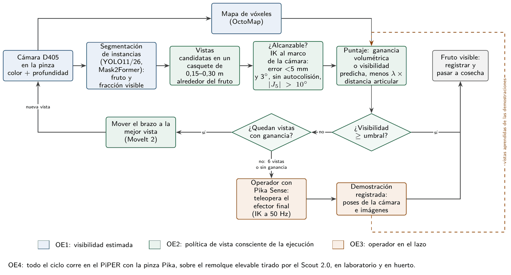
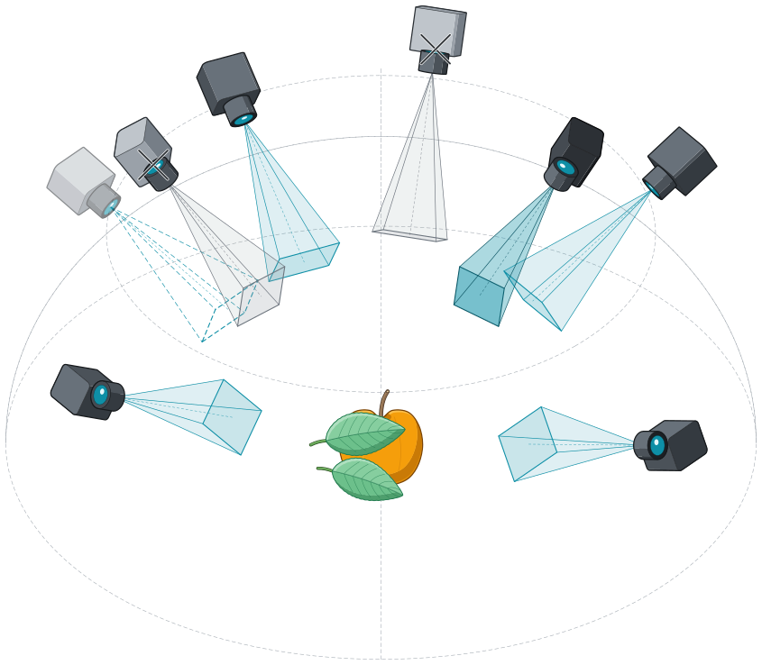
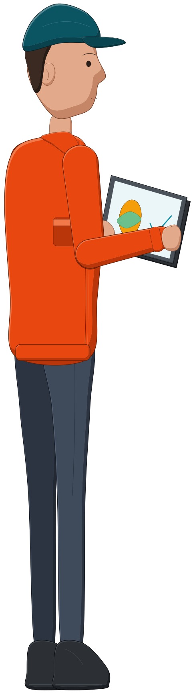

La cosecha y el transporte de fruta dependen de una mano de obra cada vez más escasa, y los robots
cosechadores fallan sobre todo por percepción: hojas, ramas y frutos vecinos ocultan el objetivo, y una cámara fija no
logra verlo. Mi trabajo avanza desde la visión por computador y la interacción humano-robot hacia la
percepción activa: mover la cámara montada en el brazo hacia la vista que mejor revela el fruto, sin
perder de vista que el brazo tiene que poder llegar ahí y que el operador sigue presente en el huerto.
Percepción activa con el humano en el lazo para frutos ocluidos
Tesis doctoral, Doctorado en Ingeniería de Sistemas Avanzados (UNAB), 2025–presente · Profesor guía: Dr. Juan Pablo Vásconez · Co-guía: Dra. Catalina González Castaño
Título provisional: Percepción activa con el humano en el lazo para la cosecha robótica de frutos ocluidos:
planificación de vistas y aprendizaje por demostración del efector final en un manipulador móvil.
Pregunta. ¿Cómo cambia la capacidad de un brazo con cámara en la muñeca para revelar frutos
ocluidos cuando la elección de la vista considera la visibilidad estimada del fruto, la alcanzabilidad del brazo y
la posibilidad de ceder el control al operador?
Hipótesis. Con el mismo número de vistas, una política consciente de la visibilidad y de la
ejecución revela más frutos severamente ocluidos que las vistas fijas, aleatorias y un planificador volumétrico; y
ceder el control al operador ante un fallo eleva el éxito con menor carga de trabajo que la teleoperación completa.
Objetivos. (1) Estimar la fracción visible de cada fruto con segmentación de instancias y modelar
cómo cae la detección con la oclusión. (2) Diseñar políticas de vista que combinen visibilidad esperada, ganancia de
información y alcanzabilidad del brazo. (3) Un modo de respaldo en que el operador recupera el fruto con el Pika
Sense, del que se aprenden vistas a partir de las demostraciones del efector final. (4) Validar el sistema integrado
en invernadero o huerto.
Método. Ciclos de diseño y evaluación en ROS 2: simulación en Gazebo con oclusión controlada
por nivel de visibilidad (25 a 100 %), laboratorio, estudio con usuarios y ensayo en huerto.
Plataforma. Brazo AgileX PiPER con la pinza Pika (RealSense D405 y cámara ojo de pez en la
muñeca), sobre un remolque con plataforma elevable tirado por un robot AgileX Scout 2.0.

Ciclo propuesto. La segmentación estima la fracción visible del fruto (OE1); la política genera vistas
alrededor del fruto, descarta las que el brazo no alcanza y elige la de mayor puntaje (OE2); si ninguna llega al
umbral, el operador toma el control con el Pika Sense y su demostración queda registrada (OE3). Todo corre sobre la
plataforma móvil de cosecha (OE4).
Resultados preliminares
En la simulación del PiPER con la pinza Pika frente a un muro frutal de manzano generado con Helios, de 20 vistas
candidatas a 0,30 m de la manzana objetivo solo 4 resultaron alcanzables: 8 acercan la cámara o las garras a menos de
3 cm de una rama y las otras 8 quedan fuera de la cinemática del brazo. La vista frontal ve el 39 % de la manzana y la
mejor alcanzable el 69 %; con follaje denso, la diferencia es de 7 % a 96 %. La visibilidad calculada por trazado de
rayos coincide con la medida en la imagen del simulador con un error medio de 2,6 puntos.
(a) Las 20 vistas candidatas alrededor de la manzana objetivo, con las alcanzables en color y la elegida
en rojo; (b) lo que ve la cámara desde la vista frontal (39 % visible); (c) desde la vista elegida (69 %).
Código: pika_ros, rama sim-gazebo.
Revisión sistemática del estado del arte
PRISMA 2020 · 2015–2026 · manuscrito para Biosystems Engineering
Revisé la percepción activa con manipuladores, con foco en agricultura y con el rol del operador humano como eje
de la taxonomía. Crucé Scopus, IEEE Xplore y arXiv con búsqueda por citas e incluí 318 estudios:
237 con un manipulador que lleva el sensor y 64 agrícolas. Cada estudio se verificó contra sus figuras y tablas, y
los datos, la codificación y los scripts están versionados.
Tres vacíos orientan la tesis:
solo 20 estudios probaron el robot en campo o invernadero, y apenas 4 compararon allí planificadores de vista;
solo 98 de los 237 estudios con manipulador consideran si el brazo puede alcanzar la vista elegida;
el humano participa en 59 de los 318 estudios, pero en solo 7 de los 64 agrícolas, y ninguno lo usa como
respaldo cuando la percepción autónoma falla.

Planificación de la siguiente mejor vista: vistas candidatas alrededor del fruto ocluido.
Comparé YOLO11-seg, YOLO26-seg y Mask2Former en la segmentación de instancias de frutos según su nivel de
visibilidad. Mask2Former alcanzó un 61,01 % de mAP50–95 de máscara y fue el más robusto bajo oclusión severa;
YOLO11m llegó a 51,97 %. La curva de calidad del detector por nivel de
visibilidad es la base de la utilidad de vista de la tesis (OE1).
YOLO11 sobre una imagen de la cámara D405 de la pinza Pika: manzana roja entre hojas.
Simulé cuadrillas de cosecha de palta con y sin un robot de transporte que lleva la fruta al acopio, y construí
modelos sustitutos validados que predicen la producción y la carga de trabajo de los cosecheros. El robot elevó la
fruta cosechada entre 20 y 22 % para equipos de 4 a 24 trabajadores. HarvestView, la maqueta 3D en el navegador,
reproduce y extiende esas corridas a otros huertos, cuadrillas y robots.
Interacción humano-robot
ARTIIS 2024 (Springer CCIS) · RICAI 2025 (IEEE)
Mi tesis de pregrado controló un brazo de 6 grados de libertad con gestos de la mano detectados con YOLO, una
forma de comunicación no verbal con el robot. En el doctorado evalué la interacción humano-robot en un sistema de
dos robots teleoperados. Ambas líneas alimentan el modo de respaldo de la tesis, en el que el operador toma el
control cuando la percepción autónoma falla.

El operador como respaldo: revisa la detección y confirma o corrige.